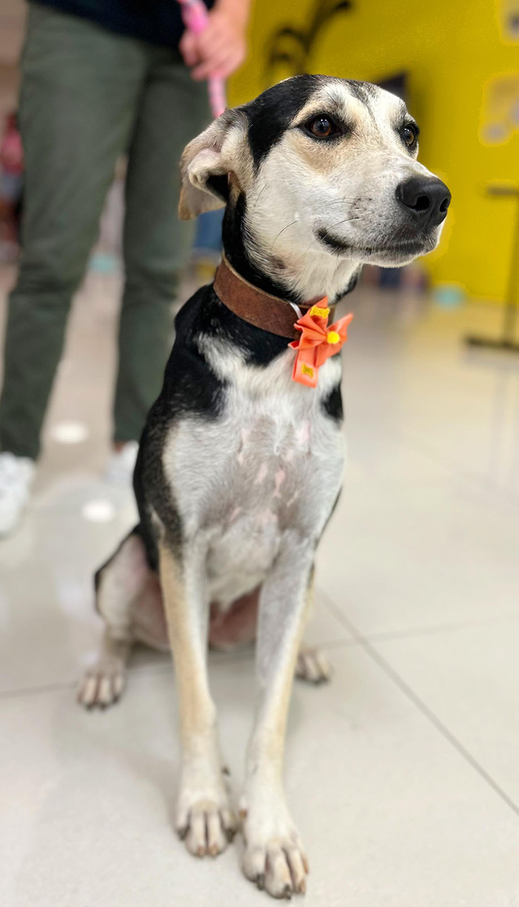

LUMA
Cão | Fêmea | 3 anos | castrado(a) | vacinado(a)
DESCRIÇÃO: Luma vivia nas ruas com seu irmão Juca. Ele foi adotado, mas ela ainda segue esperando seu tão sonhado lar. Luma é puro amor e calmaria! Precisa de um lar com muito amor e carinho.
Quero Adotar